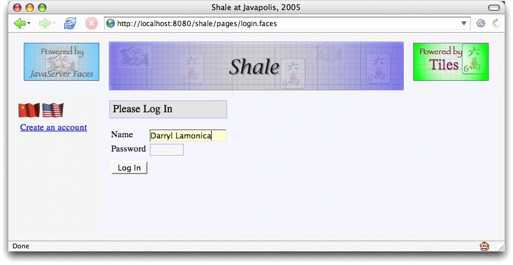
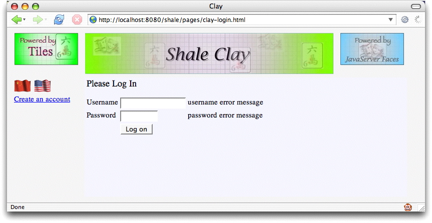
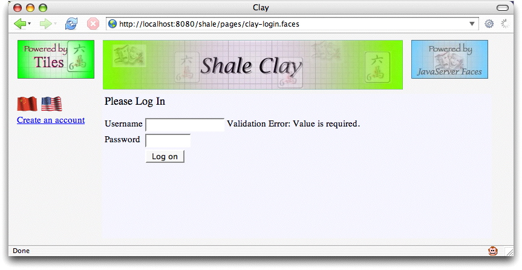
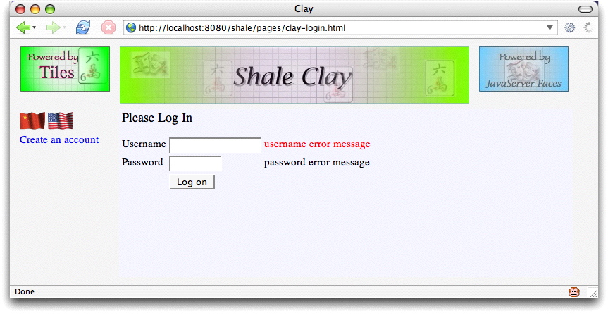
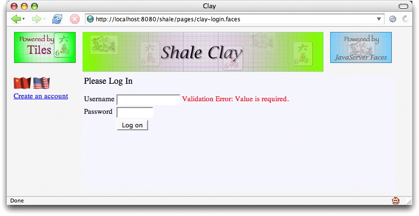
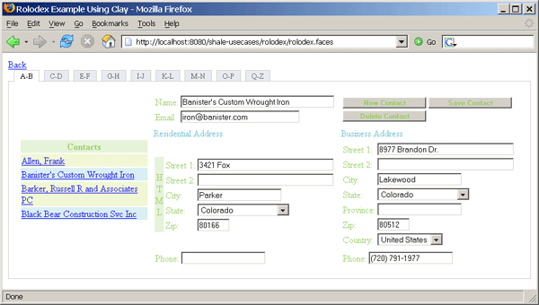

Every JavaServer Faces (JSF) view is represented on the server as a tree of components. Shale's Clay lets you graft a component subtree onto an existing component tree.
At first blush, this may not seem like much; after all, you
can accomplish the same thing with JSF's standard f:subview
tag. However, Clay builds upon this fundamental feature to give you
the following killer capabilities:
jsfid attribute--when Clay renders your view, it
replaces static HTML elements that have jsfid attributes with their
component counterpart. When Clay creates the components, it transmits HTML style
attributes from the HTML tag to the component; therefore, graphic designers can implement
a look and feel with mockup HTML and that look and feel is absorbed by the component
that replaces the mockup HTML.
t:aliasBean
tag--lets you reuse a view for many different managed beans.
The most prominent Clay feature is HTML Views. In this document, we will cover that feature in some detail. For more information on composition and symbols, see the Shale javadoc. Todo: add sections on composition and symbols
Back in the early days of J2EE, when people wrote applications that were mostly collections of servlets, everybody implemented their views in HTML. But because implementing user interfaces with print statements that originate from the bowels of a servlet is just marginally better than a trip to the dentist, Sun quickly followed servlets with JSP. Now, we could mix Java code with HTML instead of the other way around, which as everybody knows may have seemed like a step in the right direction, but was, and still is, fraught with perils of its own.
Anyway, the point is that we moved away from HTML with JSP tags, and later on, custom tags. Of course nowadays, with the advent of JavaServer Faces, it's fashionable to construct your user interface almost entirely with JSF tags. For the software developer who is also a graphic designer, that's a pretty sweet deal. JSF tags are much more concise than the HTML that they replace and developers can control all manner of things look and feel. But what if the software developer and graphic designer are different people? What then?
If you'd like your graphic designers to implement your look and feel while your software developers work on components, then JSP is a terrible solution. I can see those of you in the back of the room nodding your heads, so I won't preach to the choir. The Apache Tapestry framework was the first Java web framework that not only acknowledged that fact, but, more importantly, did something about it.
Tapestry maintains a strict separation between graphic designers and software
developers through an innovative design. Graphic designers mockup HTML to implement
a look and feel. Software developers take that HTML and add an innocuous jwcid
attribute to the HTML tags that represent dynamic content. That attribute's value
references a Tapestry component defined in an XML file. When the HTML is viewed as
an HTML page, the graphic designer sees the mockup HTML, but when the same HTML file
is run through Tapestry, the mockup HTML is replaced by Tapestry components. And here's
the clincher: when the components replace the mockup HTML, they soak up the mockup HTML's
look and feel. This lets graphic designers concentrate on the look and feel and lets
developers work on components. Whoa.
Clay unabashedly copies Tapestry's innovations. In fact, if you replace Tapestry with Clay and jwcid with jsfid in the preceeding paragraph, you'd have an accurate description of Clay's HTML Views. But enough talk; let's see how it works.
Here's yet another incarnation of a simple login and registration application: (hey, it's better than Hello World!).

This application uses Tiles, so its JSP pages are pretty well carved up. We're going to look at the JSP page that implements the login form. (Don't sweat the details)
<%@ taglib uri="http://java.sun.com/jsf/core" prefix="f" %>
<%@ taglib uri="http://java.sun.com/jsf/html" prefix="h" %>
<%@ taglib prefix="s" uri="http://shale.apache.org/clay" %>
<s:token id="token"/>
<h:panelGrid columns="1" styleClass="loginPanel">
<h:panelGrid styleClass="summaryHeadingPanel">
<h:outputText value="#{msgs.loginHeading}" styleClass="loginHeading"/>
</h:panelGrid>
<h:message for="token" styleClass="errors"/>
<h:panelGrid columns="2" styleClass="loginFields">
<%-- NAME FIELD --%>
<h:outputLabel for="name" value="#{msgs.namePrompt}"/>
<h:panelGroup>
<h:inputText size="15" id="name" onfocus="activatefield(this);"
onblur="deactivatefield(this);" styleClass="input"
validator="#{loginPage.validate}" required="true"
value="#{userContext.name}"/>
<h:message for="name" styleClass="errors"/>
</h:panelGroup>
<%-- PASSWORD FIELD --%>
<h:outputLabel for="pwd" value="#{msgs.passwordPrompt}"/>
<h:panelGroup>
<h:inputSecret size="6" id="pwd" value="#{userContext.password}"
onfocus="activatefield(this);" onblur="deactivatefield(this);"
styleClass="input"/>
<h:message for="pwd" styleClass="errors"/>
</h:panelGroup>
<h:outputText value=" "/><h:outputText value=" "/>
<h:commandButton value="#{msgs.loginButtonPrompt}"
action="#{loginPage.submit}"/>
</h:panelGrid>
</h:panelGrid>
Quick! Turn away! Let's replace that JSP with mockup HTML tied to JSF components:
<html>
<head>
<title>Clay</title>
<link href="/shale/styles/site.css"
rel="stylesheet" type="text/css"/>
</head>
<body class="loginPage">
<table style="vertical-align: top; text-align: center; width: 100%; height: 100%">
<tr style="vertical-align: top;">
<td colspan="2" class="header">
<img src="/shale/graphics/powered-by-tiles.jpg" align="top"/>
<img src="/shale/graphics/spacer.gif" width="6px" height="1px"/>
<img src="/shale/graphics/shaleClay.jpg"/>
<img src="/shale/graphics/spacer.gif" width="6px" height="1px"/>
<img src="/shale/graphics/powered-by-javaserver-faces.jpg" align="top"/>
</td>
</tr>
<tr style="vertical-align: top; height: 100%;">
<td class="menu">
<table>
<tr><td>
<img src="/shale/graphics/china-flag-animated.gif" border="0px"/>
<img src="/shale/graphics/us-flag-animated.gif" border="0px"/>
</td></tr>
<tr><td>
<a href="#" jsfid="dialogLink">Create an account</a>
</td></tr>
</table>
</td>
<td>
<form id="menuContentForm" onsubmit="return validateForm(this);">
<table>
<tr>
<td>Username</td>
<td>
<input jsfid="username" type="text" size="15"/>
</td>
<td>
<span jsfid="usernameMessage" style="color: red;">
username error message
</span>
</td>
</tr>
<tr>
<td>Password</td>
<td>
<input jsfid="password" type="text" size="15"/>
</td>
<td>
<span jsfid="passwordMessage" style="color: red;">
password error message
</span>
</td>
</tr>
<tr>
<td colspan="3">
<input jsfid="login" type="submit" value="Log on" >
</td>
</tr>
</table>
</form>
</td>
</tr>
</table>
...
The HTML is considerably longer than the JSP, so we've only shown the top of the
HTML file. You don't need to see it all--all that's pertinent is the mockup HTML and
the jsfid attributes that point to JSF components. Remember that we can
access the preceeding HTML either directly (as a graphic designer)
or through Clay (as a developer or end user). Here's what it looks like when we access the
HTML directly:

And here's what it looks like through Clay:

Did you notice the differences? First, the URL in the address bars: one ends in .html
and the other ends in .faces. Second, the error messages: mockups for the HTML and
real error messages for Clay. In the second snapshot, I attempted to login without a username, which
triggered JSF validation, resulting in the ensuing error message. Remember, when we run this seemingly
begnign HTML through Clay's transducer, we get a full blown login page, just like the
original page that we saw at the beginning of this section. We changed the images a bit to reflect
the fact that now we're using Clay, but that's a fully capable login page you're looking at. Of
course, that fully capable login page is populated, at runtime, by Clay with JSF components
that replace the HTML mockup. Cool, eh?
So, you wonder, where do the components come from? Well, we define them in an XML file, silly.
Shame on you for asking. In fact, here's the XML definition of the username h:inputText,
which is an input component:
<!-- username textfield -->
<component jsfid="username"
extends="inputText"
id="username">
<attributes>
<set name="required" value="true"/>
<set name="value" value="#{userContext.username}"/>
<set name="validator" value="#{@managed-bean-name.validate}"/>
</attributes>
</component>
Now, pretend you are a graphic designer and you decide to change error messages to red. Let's
keep it simple and just change the error message for the username field. So, you go into
clay-login.html and add a style attribute to the error message mockup:
...
<td>
<input jsfid="username" type="text" size="15"/>
</td>
<td>
<span jsfid="usernameMessage" style="color: red;">
username error message
</span>
</td>
...
You save that file, refresh the browser, and, as expected, you see this: (check the address bar - that's the HTML file)

Later that day, a developer runs the application through Clay and Clay replaces the mockup error message with a real error message component and transmits the style for the mockup to the component. So, when an end-user runs the application and stubbornly refuses to supply a username, he endures the following shame:

Hot dog! Our runtime error message is also red. Clay has transmitted the
style attribute of the mockup HTML for
the username error message to the component that replaces it at runtime. Now graphic
designers and software developers can truly lead independent lives.
One more thing before we conclude this section. You may wonder how Clay replaces mockup HTML with components; how does Clay know to do that to our HTML page? The answer is that Clay is implemented as a JSF component, and, along with our HTML page, we have a JSP page that uses that component to process the HTML. That component is accessed through a custom tag, like this:
<%@ taglib prefix="sh" uri="http://shale.apache.org/clay" %>
...
<sh:clay id="loginTemplate" jsfid="/pages/clay-login.html"
managedBeanName="loginPage"/>
In the preceeding code, we give the clay tag a jsfid that points, not to a
component, but to our HTML page instead. Notice we also specify a managed bean that's used
by the component definitions; for example, here's the definition of the login page's
submit button:
<!-- login submit button -->
<component jsfid="login" extends="commandButton" id="login">
<attributes>
<set name="action" value="#{@managed-bean-name.submit}"/>
<set name="value" value="Log In" />
</attributes>
</component>
The expression #{@managed-bean-name.submit} references the managed bean we
specified with the clay tag above with the managedBeanName
attribute. You can alias managed beans for any component, which allows a single component
definition to be used for any managed bean that has corresponding method signatures.
As you might suspect, implementing Clay with a custom component gives you a great deal of flexibility. Although HTML views are Clay's most visible feature, they are by no means its only feature. Clay also sports Tiles-like composition and more sophisticated symbol replacement than the managed bean example discussed above.
There are four options for creating the Clay component subtree.
<clay:clay id="namePanel" jsfid="namePanel" managedBeanName="rolodex.selectedContact"/>
These implicitly defined mappings can be overridden with a block "ignore". This is accomplished by surrounding the HTML that you would like to ignore with a well formed tag like the span tag and marking it with the reserved jsfid of "ignore". The surrounding tag will not be rendered but the child content will be rendered verbatim.
<span jsfid="ignore">
<form method="POST" action="j_security_check">
Username:<input type="text" name="j_username"><br>
Password:<input type="password" name="j_password">
<input type="submit" value="submit">
</form>
</span>
Any HTML element that is explicitly marked with a jsfid attribute, can morph into any type of faces component. This includes the eleven implicitly mapped elements. If the mapping is not explicitly declared using the jsfid attribute and there is not an assumed mapping, the default mapping is to the standard verbatim "ouputText" component. This combines the first option's component definitions with the flexibility of using HTML for layout. This raw text is applied to the "outputText" component using value binding. This means that the body of the HTML can contain inline expression language (EL) similar to JSP 2.0
<label for=city>#{messages.cityLabel}</label>
Another similar reserved jsfid is the "void" identifier. It's purpose is to remove a HTML markup from the target document. This is helpful if you want to create a well formed document for mock-up but only want to include a smaller fragment. The following example shows how the outer document markup will be removed and only the content of the html body will be considered.
<html jsfid="void">
<head jsfid="void" allowBody="false">
<title>Mock Title</title>
</head>
<body jsfid="void">
<label for=city>#{messages.cityLabel}</label>
<input type="text" value="#{@managed-bean-name.city}" id="city">
</body>
</html>
The Clay template parser has a few reserved identifiers that can be used to remove blocks of markup. These identifiers are in the form of HTML self-contained comments. Since the markers are comments, they do not interfere with displaying the template in a browser. The comment blocks behave similarly to the "void" reserved jsfid identifier shown in the previous markup fragment. Another similar comment identifier is used by the template parser to specify the character set encoding of the template. Like the start and end remove markers, this comment tag is self-contained. This marker must be located somewhere near the top of the document.
<!-- ### clay:page charset="UTF-8" /### -->
<!-- ### clay:remove ### -->
<html>
<head>
<meta http-equiv="content-type" content="text/html; charset=UTF-8"/>
</head>
<body>
<!-- ### /clay:remove ### -->
<p>BEGINNING OF HTML TEMPLATE<br />
<!-- ### clay:remove ### -->
</body>
</html>
<!-- ### /clay:remove ### -->
There are two types of HTML layouts, page fragment and full HTML layouts. The page fragments
can be pulled into a JSP page using the clay tag. The jsfid is used to identify the HTML page
composition. The suffix of the jsfid distinguishes a HTML layout for a normal component.
A ending suffix of ".html" is the default.
This example shows how a partial view can be used within a JSP page.
<clay:clay id="address" jsfid="/address.html" managedBeanName="address" />
Clay also supports full HTML views. This means that you can create a complete JavaServer Faces view using a HTML layout. The entry point or resource that formulates the view id is a HTML page. There are only a couple difference between partial HTML views and full HTML views. The first difference is that the view id is used as identification verses the jsfid. Instead of invoking a resource with a suffix of ".jsp", the target URI is a HTML layout with a file suffix of ".html". The second difference is that the managedBeanName property is assumed and cannot be explicitly specified. It plays by the same rules as the Shale ViewController mapping to a registered manged bean. This means the registered "@managed-bean-name" is derived from the viewId of the page. For example, a page identifed by "/symbols/page1.html" would have a default view controller mapping of "symbols$page1".
It is also possible to create a HTML full or partial view that doesn't require additional entries in the XML configuration files other than the defaults that are automatically loaded. The attributes specified in the HTML element are passed on to the corresponding JSF component properties. The HTML attributes are case insensitive but otherwise must match attributes defined for the component in the Clay configuration file.
<input type=text value=#{@managed-bean-name.city} id=city size=20>
<input type=submit value=Save action=#{@managed-bean-name.save}>
There is yet another option for creating templates using HTML markup. The Clay parser supports XML namespaces. This option allows you to borrow the JSP tag notations. In addition to the standard tags, Clay takes it a little further by adding the "extends" attribute which allows you to inherit characteristics of another component's definitions. Clay also has limited mapping support for JSPX tags allowing for "lazy reuse" of existing JSPX templates.
<!-- ### clay:page charset="UTF-8" /### -->
<jsp:root xmlns:jsp="http://java.sun.com/JSP/Page" version="2.0"
xmlns:f="http://java.sun.com/jsf/core"
xmlns:h="http://java.sun.com/jsf/html"
xmlns:trh="http://myfaces.apache.org/trinidad/html"
xmlns:tr="http://myfaces.apache.org/trinidad"
xmlns:c="http://shale.apache.org/clay">
<f:view>
<tr:form id="form">
<tr:panelPartialRoot id="ajax">
<tr:treeTable id="treeTable" var="foo" value="#{@managed-bean-name.model}" summary="Catalog" >
<f:facet name="nodeStamp">
<tr:column>
<f:facet name="header">
<tr:outputText value="name"/>
</f:facet>
<tr:commandLink actionListener="#{@managed-bean-name.select}"
partialSubmit="true" text="#{foo.name}"/>
</tr:column>
</f:facet>
<f:facet name="pathStamp">
<tr:commandLink actionListener="#{@managed-bean-name.select}"
partialSubmit="true" text="#{foo.name}"/>
</f:facet>
<tr:column>
<f:facet name="header">
<h:outputText value="description"/>
</f:facet>
<tr:outputText value="#{foo.description}"/>
</tr:column>
</tr:treeTable>
</tr:panelPartialRoot>
</tr:form>
</f:view>
</jsp:root>
This is an example of how the runtime option would be used within a JSP page:
<clay:clay id="address" jsfid="RUNTIME"
shapeValidator="#{fullAddress.createSubtree}"/>
The runtime option is supported with the other types of composition. Clay provides a registered managed bean that provides some added runtime utilities such as "clayOut" and "clayImport".
<span jsfid="clayOut" value="<br>" escapeXml="false"/>
<pre>
<span jsfid="clayImport" url="#{param['url']}" escapeXml="true"/>
</pre>
<!DOCTYPE view PUBLIC
"-//Apache Software Foundation//DTD Shale Clay View Configuration 1.0//EN"
"http://shale.apache.org/dtds/clay-config_1_0.dtd">
<view>
<component jsfid="/rolodex/rolodex.xml" extends="clay">
<attributes>
<set name="clayJsfid" value="/rolodex/xhrolodex.html" />
<set name="managedBeanName" value="rolodex$xhrolodex" />
</attributes>
</component>
</view>
Each of these options is demonstrated in the Shale Use Cases example application. The Clay "Rolodex" is shown below:

The Clay XML configuration data is a replacement for the JSF/JSP tags. A base configuration file is provide in the META-INF directory of the shale-clay.jar archive. The configuration document type definitions have similarities to the JSP tags, but are designed to be more generic. The same node structure is used to define a variety of resources.
A component is a "top-level" element. In the DTD,
a component can represent a JSF component, converter, validator, action listener or value change listener. Only "top-level" elements
can be the root of a clay subtree. The componentType attribute defines the association to the face's resource. The jsfid
attribute is a logical unique identifier.
<component jsfid="outputText" componentType="javax.faces.HtmlOutputText"/> <component jsfid="validateLongRange" componentType="javax.faces.LongRange"/>
A component can extend another component, thereby inheriting attributes and contained element nodes from the parent component. This is accomplished by using the extends attribute. The value of the extends attribute should be a jsfid of the parent component definition.
<component jsfid="baseLabel" extends="outputLabel" allowBody="false">
<attributes>
<set name="style" value="color:blue"/>
</attributes>
</component>
<component jsfid="cityLabel" extends="baseLabel">
<attributes>
<set name="value" value="City:"/>
<set name="for" value="city"/>
</attributes>
</component>
A component node has an attribute container. This is a generic container to hold all attributes that would be represented by associated JSF/JSP Tags. Attributes are added or overridden in inheritance using the attribute name as the unique identifier.
<component jsfid="addressPanel" extends="panelGrid"> <attributes>
<set name="columns" value="2" /> </attributes> <element renderId="1" jsfid="street1Label"/> <element renderId="2" jsfid="street1"/> </component> <component jsfid="addressPanelEx" extends="addressPanel"> <attributes> <set name="columns" value="3" /> </attributes> <element renderId="3" jsfid="street1Message"/> </component>
The element node is the composition glue. Components are uniquely defined by a renderId attribute. This integer value defines the sequential order within the outer component. The renderId attribute also acts as the "method signature" for the element when resolving inheritance. This means components can extend other components by overriding or extending elements based on the renderId of the first level of child components.
<component jsfid="ssnColumn" extends="column" id="ssn">
<element renderId="1" jsfid="outputText" facetName="header">
<attributes>
<set name="value" value="SSN" />
</attributes>
</element>
<element renderId="2" jsfid="outputText">
<attributes>
<set name="value" value="#{e.ssn}" />
</attributes>
</element>
</component>
<component jsfid="personTable" extends="dataTable">
<attributes>
<set name="value" value="#{@managed-bean-name.persons}"/>
<set name="var" value="e"/>
<set name="rows" value="5"/>
<set name="first" value="1"/>
<set name="border" value="1"/>
<set name="cellpadding" value="3"/>
</attributes>
<element renderId="1" jsfid="firstNameColumn"/>
<element renderId="2" jsfid="lastNameColumn"/>
</component>
<component jsfid="employeeTable" extends="personTable">
<element renderId="0" jsfid="ssnColumn"/>
<element renderId="3" jsfid="birthDateColumn"/>
</component>
Clay also allows reuse of view fragments bound to different logical managed bean names. There is limitation when using JSP fragments for constructing JSF page composition. The view is coupled with the backing bean through a expression language (EL). The view fragment is bound to only one managed bean. The "managedBeanName" attribute of the Clay component discussed above is a Symbol. Symbols can be used to alter a binding expression. Managed bean names in Shale will most likely resolve to a ViewController. Decoupling a view with the managed bean name is accomplished by using a simple token replacement on the expression. This is performed on attribute values containing faces EL bindings. A token value of "@managed-bean-name" is replaced with the value of the Clay managedBeanName property. The replacement of the literal string "@managed-bean-name" with the value of the managedBeanName property is done before creating the expression language binding.
This example show how the literal string "@managed-bean-name" will be replaced with "businessAddress".
<clay:clay id="address" managedBeanName="businessAddress" jsfid="saveCommand"/> <clay:clay id="saveBusiness" managedBeanName="businessAddress" jsfid="saveCommand"/>
<component jsfid="saveCommand" extends="commandButton">
<attributes>
<set name="value" value="Save" />
<set name="action" value="#{@managed-bean-name.save}" />
<set name="actionListener" value="#{@managed-bean-name.saveAction}"/>
</attributes>
<actionListener jsfid="logNavigationActionListener"/>
</component>
Symbols are an important reuse feature in Clay. Symbols are a string substitution layer that sits on top of a meta-data value before it is applied to the component. The meta-data can be intermixed with any type of component property. Symbols are identified using a prefix delimiter. The delimiter is a single @ character.
What can you do with Symbols? They allow creation of dictionaries of components and component compositions that surpasses the simple reuse of JavaServer Pages (JSP) fragments.
How are Symbols defined? Symbols are always associated with component meta-data. The meta-data defines component properties and how components are assembled within a page. There is currently a couple sources to define symbols, XML and HTML. In the future this could be expanded to other sources.
In the clay XML document type definition (DTD),
symbols are defined similar to component attributes. Symbols are
defined within a symbols node versus an attributes node. Both symbols
and attributes use the same set element definition but the symbols ignore the
bindingType attribute. The same inheritance rules apply to symbols as attributes.
Components that extend another component will inherit all symbols within the extended component. Symbols can be overridden
within the heritage of component meta-data inheritance. A symbol name can also be defined without a value attribute.
The significance of a missing value verses an empty value is defined by the symbols replacement rules. The @ character
symbol delimiter is added to the beginning of the name attribute if not specified.
<!-- Base layout defintion -->
<component jsfid="basePage" extends="clay">
<attributes>
<set name="clayJsfid" value="/symbols/layout.html" />
</attributes>
<symbols>
<set name="@title" value="Default Title"/>
<set name="@leftContent" value="page3LeftPanel"/>
<set name="@headercontent" value="/symbols/header.html"/>
<set name="@logo" value="http://struts.apache.org/images/struts.gif"/>
<set name="@bodycontent" value="space"/>
<set name="@footercontent" value="footerPanel"/>
</symbols>
</component>
<component jsfid="page3" extends="basePage">
<symbols>
<set name="@title" value="Page 3"/>
<set name="@bodyContent" value="page3Panel"/>
<set name="@logo" value="http://myfaces.apache.org/images/myfaces-logo.png"/>
<set name="@leftContent" value="page3LeftPanel"/>
</symbols>
</component>
Symbols can be defined in HTML templates. The convention for using HTML to define JSF composition is to associate a HTML element with a JSF component using a jsfid attribute. All attributes defined within the HTML are passed on to the JSF component. Attributes that are not defined as component attributes (the component XML configuration) are assumed to be symbols. These names are assumed a beginning prefix @ character delimiter.
<html jsfid="page3"
bodycontent="/symbols/businessPerson.html"
allowBody="false">
<head><title>Mock Header</title></head>
<body>The entire document is replaced by the layout.</body>
</html>
Symbols can also be used in in conjunction with the clay JSP tag. The nested symbol
tag is used to add a symbol to the clay component.
<clay:clay id="page3" jsfid="basePage">
<clay:symbol name="bodycontent" value="/symbols/businessPerson.html"/>
<clay:symbol name="footercontent" value="/symbols/footer.html"/>
</clay:clay">
What are the rules for Symbol replacement? Symbols are identified by a single prefix @ character delimiter and doesn't require that you use a ending delimiter. This can be problematic if you have two symbols that have the same prefix. For example @foo and @fooBar would have unpredictable results since there is not a predefined precedence of evaluation. The solution to this problem is to assume beginning and ending delimiter like @xfoox and @xfooBarx. Symbols are scoped for composition. This allows a customization defined by a symbol to be defined at the root of a subtree and cascaded to all child components until overridden. The literal representation of a Symbol is replaced with the value of the symbol. If the result of the substitution is a zero length string, a null value is returned and the value is not apply to a property. If a token is defined with an @ character but there is not a symbol defined, is left unchanged.
What are some common symbol applications? The original application of symbols was limited to aliasing managed bean names within binding expressions. This idea grew into a more elaborate strategy for creating reuse. Symbols can also be used for property aliasing. A good example of that is the component styleClass attribute. This attribute really represents the HTML class attribute but due to reserved word conflicts in the java programming language, it could not be named class. We use the symbol of class to alias the styleClass attribute by defining symbol class and setting the default styleClass attribute to "@class".
<component jsfid="baseHtml" componentType="override">
<attributes>
<!-- Convention mapping "class" attribute to "styleClass" property -->
<set name="styleClass" value="@class"/>
</attributes>
<symbols>
<set name="class"/>
</symbols>
</component>
<label for=city>#{messages.cityLabel}</label>
<input type="text" value="#{@managed-bean-name.city}" id="city" class="inputText" >
Symbols can be used to create generic page layouts and plug in sections using symbol replacement. This is a rich page composition feature that was borrowed from tiles.
<html>
<head><title>@title</title></head>
<body>
<form>
<table border="1">
<tr>
<td id="leftContent" rowspan="3"><span jsfid="clay" clayJsfid="@leftContent" allowBody="false">Left<br/>Content</span></td>
<td id="headerContent"><span jsfid="clay" clayJsfid="@headercontent" allowBody="false">Header<br/>Content</span></td>
</tr>
<tr>
<td id="bodyContent"><span jsfid="clay" clayJsfid="@bodycontent" allowBody="false">Body<br/>Content</span></td>
</tr>
<tr>
<td id="footerContent"><span jsfid="clay" clayJsfid="@footercontent" allowBody="false">Footer<br/>Content</span></td>
</tr>
</table>
</form>
</body>
</html>
Another form of reuse allows components to morph into other component. For example, a outputText component can be altered into a inputText component.
<component jsfid="outCity" extends="outputText">
<attributes>
<set name="value" value="#{@managed-bean-name.city}" />
</attributes>
</component>
<component jsfid="inputCity" extends="outCity" componentType="javax.faces.HtmlInputText"/>